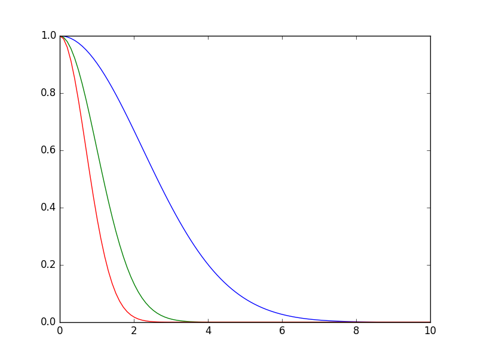
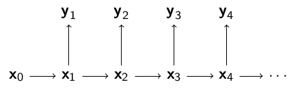
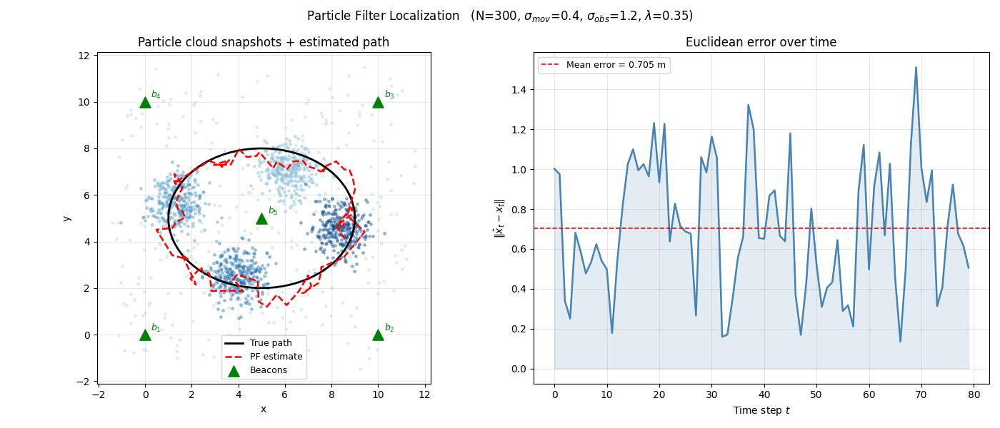

Parcaçık filtreleri Kalman filtrelerinde olduğu gibi saklı bir konum bilgisi hakkında dış ölçümler üzerinden kestirme hesabı yapabilir. Her parçacık bir hipotezi, farklı bir konum bilgisini temsil eder, olasılığı, olurluğu ölçüm fonksiyonudur. Eğer bu olasılık değeri problemden direk elde edilebilen bir şey değilse, bir ölçüm / hipotez / tahmin arasındaki mesafeyi (hatayı) olurluğa çevirmek mümkün. Burada genellikle
\[ p(y_t|x_t) \sim e^{-\lambda \varepsilon^2}\]
fonksiyonu kullanılır, \(\lambda\) bir tür hassaslık parametresi, bu parametre üzerinden olurluk ya daha az ya da daha fazla etkin hale gelir, \(\varepsilon\) ölçüm ve tahmin arasındaki bir mesafe olacaktır.
x = np.linspace(0,10,100)
def f(x,lam): return np.exp(-lam * x**2)
plt.plot(x,f(x,lam=0.1))
plt.plot(x,f(x,lam=0.5))
plt.plot(x,f(x,lam=1.0))
plt.savefig('tser_pf_03.png')
Kalman Filtrelerine ve Saklı Markov Modellerinde gördüğümüz modeli hatırlayalım,

Bu modelde gözlemler, yani dışarıdan görülen ölçümler \(y_1,y_2,..\) ve bu rasgele değişkenler şartsal olarak eğer \(x_0,x_1,.\) verili ise birbirlerinden bağımsızlar. Model,
\(\pi(x_0)\) başlangıç dağılımı
\(f(x_t|x_{t-1})\), \(t \ge 1\) geçiş fonksiyonu
\(g(y_t|x_t)\), \(t \ge 1\), gözlemlerin dağılımı
\(x_{0:t} = (x_0,..,x_t)\), \(t\) anına kadar olan gizli konum zinciri
\(y_{1:t} = (y_1,..,y_t)\), \(t\) anına kadar olan gözlemler
Genel olarak filtreleme işleminin yaptığı şudur: nasıl davrandığını, ve dışarıdan görülebilen bir ölçütü olasılıksal olarak dışarı nasıl yansıttığını bildiğimiz bir sistemi, sadece bu ölçümlerine bakarak nasıl davrandığını anlamak, ve bunu sadece en son noktaya bakarak yapmak, yani sistemin konumu hakkındaki tahminimizi sürekli güncellemek.
Mesela bir obje zikzak çizerek hareket ediyor. Bu zikzak hareketinin formülleri vardır, bu hareketi belli bir hata payıyla modelleriz. Fakat bu hareket 3 boyutta, diyelim ki biz sadece 2 boyutlu dijital imajlar üzerinden bu objeyi görüyoruz. 3D/2D geçişi bir yansıtma işlemidir ve bir matris çarpımı ile temsil edilebilir, fakat bu geçiş sırasında bir kayıp olur, derinlik bilgisi gider, artı bir ölçüm gürültüsü orada eklenir diyelim. Fakat tüm bunlara rağmen, sadece eldeki en son imaja bakarak bu objenin yerini tahmin etmek mümkündür.
Mesela zikzaklı harekete yandan bakıyor olsak obje sağa giderken bir bizden uzaklaşacak yani 2 boyutta küçülecek, ya da yakınlaşacak yani 2 boyutta büyüyecek. Tüm bu acaipliğe (!) rağmen eğer yansıtma modeli doğru kodlanmış ise filtre yeri tespit eder. Her parçacık farklı bir obje konumu hakkında bir hipotez olur, sonra objenin hareketi zikzak modeline göre, algoritmanin kendi zihninde yapılır, bu geçiş tüm parçacıklar / hipotezler üzerinde işletilir, sonra yine tüm parçacıklar ölçüm modeli üzerinden yansıtılır. Son olarak eldeki veri ile bu yansıtma arasındaki farka bakılır. Hangi parçacıklar daha yakın ise (daha doğrusu hangi ölçümün olasılığı mevcut modele göre daha yüksek ise) o parçacıklar hayatta kalır, çünkü o parçacıkların hipotezi daha doğrudur, onlar daha “önemli’’ hale gelir, diğerleri devreden çıkmaya başlar. Böylece yavaşça elimizde hipotez doğru olana yaklaşmaya başlar.
Matematiksel olarak belirtmek gerekirse, elde etmek istediğimiz sonsal dağılım \(p(x_{0:t} | y_{1:t})\) ve ondan elde edilebilecek yan sonuçlar, mesela \(p(x_t | y_{1:t})\). Bu kısmi (marginal) dağılıma filtreleme dağılımı ismi de veriliyor, kısmi çünkü \(x_{1:t-1}\) entegre edilip dışarı çıkartılmış. Bir diğer ilgilenen yan ürün \(\phi\) üzerinden \(p(x_{0:t} | y_{1:t})\)’nin beklentisi, ona \(I\) diyelim,
\[ I(f_t) = \int \phi_t(x_{0:t}) p(x_{0:t} | y_{1:t}) \mathrm{d} x_{0:t} \]
En basit durumda eğer \(\phi_t(x_{0:t}) =x_{0:t}\) alırsak, o zaman şartsal ortalama (conditional mean) elde ederiz. Farklı fonksiyonlar da mümkündür [1].
Üstteki entegrali \(x_{0:t} | y_{1:t}\)’den örneklem alarak ve entegrali toplam haline getirerek yaklaşıksal şekilde hesaplayabileceğimizi [2] yazısında gördük. Fakat \(x_{0:t} | y_{1:t}\)’den örnekleyemiyoruz. Bu durumda yine aynı yazıda görmüştük ki örneklenebilen başka bir dağılımı baz alarak örneklem yapabiliriz, bu tekniğe önemsel örnekleme (importance sampling) adı veriliyordu. Mesela mesela herhangi bir yoğunluk \(h(x_{0:t})\) üzerinden,
\[ I = \int \phi(x_{0:t}) \frac{ p(x_{0:t}|y_{1:t}) }{ h(x_{0:t}) } h_{0:t} \mathrm{d} x_{0:t} \]
yaklaşıksal olarak
\[ \hat{I} = \frac{1}{N} \sum_{i=1}^{N} \phi (x^i_{0:t}) w^i_t \]
ki
\[ w^i_t = \frac{p(x^i_{0:t}|y_{1:t})}{h(x^i_{0:t})} \tag{1} \]
ve bağımsız özdeşçe dağılmış (i.i.d.) \(x^1_{0:t}, .., x^N_{0:t} \sim h\) olacak şekilde. Yani örneklem \(h\)’den alınıyor.
Bu güzel, fakat acaba \(w^i_t\) formülündeki \(p(x^i_{0:t}|y_{1:t})\)’yi nasıl hesaplayacağız? Ayrıca \(h\) nasıl seçilecek? Acaba üstteki hesap özyineli olarak yapılamaz mı, yani tüm \(1:t\) ölçümlerini bir kerede kullanmadan, \(t\) andaki hesap sadece \(t-1\) adımındaki hesaba bağlı olsa hesapsal olarak daha iyi olmaz mı?
Bu mümkün. Mesela önemsel dağılım \(h\) için,
\[ h(x_{0:t}) = h(x_t | x_{0:t-1}) h(x_{{0:t-1}}) \tag{2} \]
Üstteki ifade koşulsal olasılığın doğal bir sonucu. Peki ağırlıklar özyineli olarak hesaplanabilir mi? Bayes Teorisini kullanarak (1)’in bölünen kısmını açabiliriz,
\[ w_t = \frac{p(x_{0:t}|y_{1:t})}{h(x_{0:t})} = \frac{p(y_{1:t}|x_{0:t}) p(x_{0:t})}{h(x_{0:t})p(y_{1:t}) } \tag{3} \]
çünkü hatırlarsak \(P(A|B) = P(B|A)P(A) / P(B)\), teknik işliyor çünkü \(P(B,A)=P(A,B)\).
Şimdi \(h(x_{0:t})\) için (2)’de gördüğümüz açılımı yerine koyalım,
\[ w_t = \frac{p(y_{1:t}|x_{0:t}) p(x_{0:t})}{h(x_t | x_{0:t-1}) h(x_{{0:t-1}}) p(y_{1:t}) } \]
Ayrıca gözlem dağılımı \(g\)’yi \(p(y_{1:t}|x_{0:t})\)’yi, ve gizli geçiş dağılımı \(f\)’i \(p(x_{0:t})\) açmak için kullanırsak,
\[ = \frac {g(y_t|x_t) p(y_{1:t-1}|x_{0:t-1}) f(x_t|x_{t-1})p(x_{0:t-1}) } {h(x_t|x_{0:t-1}) h(x_{{0:t-1}}) p(y_{1:t})} \]
Üstteki formülde bölünendeki 2. çarpan 4. çarpan ve bölende ortadaki çarpana bakalım, bu aslında (3)’e göre \(w_{t-1}\)’in tanımı değil mi?
Neredeyse; arada tek bir fark var, bir \(p(y_{1:t-1})\) lazım, o üstteki formülde yok, ama onu bölünene ekleyebiliriz, o zaman
\[ = w_{t-1} \frac{g(y_t|x_t) f(x_t|x_{t-1})p(y_{1:t-1}) } {h(x_t|x_{0:t-1}) p(y_{1:t})} \]
Hem \(p(y_{1:t})\) hem de \(p(y_{1:t})\) birer sabittir, o zaman o değişkenleri atarak üstteki eşitliğin oransal doğru olduğunu söyleyebiliriz. Ayrıca bu ağırlıkları artık normalize edilmiş parçacıklar bazında düşünürsek, \(\tilde{w}^i_t = \frac{w_t^i}{\sum_j w_t^j}\), o zaman
\[ \tilde{w}^i_{t} \propto \tilde{w}^i_{t-1} \frac{g(y_t|x_t) f(x_t|x_{t-1}) } {h(x_t|x_{0:t-1}) } \]
Eğer başlangıç dağılımı \(x_0^{(1)}, ..., x_0^{(N)} \sim \pi(x_0)\)’dan geliyor ise, ve biz \(h(x_0) = \pi(x_0)\) dersek, ayrıca önem dağılımı \(h\) için \(h(x_t|x_{0:t-1}) = f(x_t|x_{t-1})\) kullanırsak, geriye
\[ \tilde{w}^i_{t} \propto \tilde{w}^i_{t-1} g(y_t|x_t) \]
kalacaktır.
Burada ilginç bir nokta sistemin geçiş modeli \(f\)’in önemlilik örneklemindeki teklif (proposal) dağılımı olarak kullanılmış olması.
Tekrar Örnekleme
Buraya kadar gördüklerimiz sıralı önemsel örnekleme (sequential importance sampling) algoritması olarak biliniyor. Fakat gerçek dünya uygulamalarında görüldü ki ağırlıklar her adımda çarpıla çarpıla dejenere hale geliyorlar. Bir ilerleme olarak ağırlıkları her adımda çarpmak yerine her adımda \(w_t\) \(g\) üzerinden hesaplanır, ve bir ek işlem daha yapılır, eldeki ağırlıklara göre parçacıklardan “tekrar örneklem’’ alınır. Bu sayede daha kuvvetli olan hipotezlerin hayatta kalması diğerlerinin yokolması sağlanır.
Nihai parcaçık filtre algoritması şöyledir,
particle_filter\(\left( f, g,
y_{1:t} \right)\)
Her \(i=1,..,N\) için
Örnek
Aşağıdaki 2 boyutlu bir düzlemde hareket eden bir robotun konumunu, sabit noktalardaki vericilerden (beacon) alınan mesafe ölçümleri üzerinden tahmin edeceğiz. Bu problem parçacık filtrelerinin gücünü göstermek için idealdir: durum uzayı süreklidir, hareket modeli doğrusal olmayabilir, ve ölçüm gürültüsü kolayca Gaussian olmayan bir biçim alabilir; bu koşulların hepsinde Kalman filtresi zorlanır, parçacık filtresi ise doğrudan uygulanabilir.
Problem kurulumu. \(K\) adet verici bilinen \(b_k\) konumlarında sabit duruyor. Robot her adımda her vericiye olan gerçek mesafeyi, üzerine Gaussian gürültü eklenmiş biçimde ölçüyor:
\[y_{t,k} = \|x_t - b_k\| + \mathcal{N}(0, \sigma_{obs}^2)\]
Geçiş modeli. Robotun hareketi Gaussian rasgele yürüyüş ile modellenir:
\[x_t = x_{t-1} + \mathcal{N}(0, \sigma_{mov}^2 I)\]
Bu aynı zamanda bootstrap filtre seçimi olarak önerme (proposal) dağılımı \(h(x_t|x_{t-1}) = f(x_t|x_{t-1})\) olarak kullanılır; bir önceki bölümde gördüğümüz gibi bu seçim ağırlık güncellemesini sadece ölçüm olurluğuna indirgeyerek basitleştirir.
Ağırlık güncellemesi. Her parçacık \(x_t^{(i)}\) için ağırlık, tüm vericilerdeki ölçüm hatalarının karelerinin toplamı üzerinden hesaplanır. Dokümanın başında tanıttığımız \(e^{-\lambda \varepsilon^2}\) fonksiyonu burada doğal olarak ortaya çıkar:
\[w_t^{(i)} \propto \exp\!\left(-\lambda \sum_{k=1}^K \left(\|x_t^{(i)} - b_k\| - y_{t,k}\right)^2\right)\]
burada \(\lambda = 1/(2\sigma_{obs}^2)\) ölçüm modelinin hassasiyet parametresidir.
Tekrar örnekleme. Orijinal algoritmada kullanılan yöntem yerine sistematik tekrar örnekleme (systematic resampling) kullanılmıştır. Her iki yöntem de \(O(N)\) maliyetlidir fakat sistematik yöntem çok daha düşük varyansa sahiptir: ağırlıklara göre CDF üzerinde eşit aralıklı \(N\) nokta yerleştirilir, bu sayede yüksek ağırlıklı her parçacığın en az \(\lfloor N w^{(i)} \rfloor\) kez seçilmesi garanti altına alınır.
Kod çıktısında iki grafik göreceksiniz. Sol panelde farklı zaman adımlarındaki parçacık bulutları (koyu mavi = daha geç adım) ve tahmin edilen yol gösterilmektedir; parçacık bulutunun gerçek konuma nasıl yakınsadığı görselleştirilebilir. Sağ panelde ise tahmin edilen konum ile gerçek konum arasındaki Öklid hatası zaman içinde gösterilmektedir.
import numpy as np
import matplotlib.pyplot as plt
import matplotlib.patches as mpatches
rng = np.random.default_rng(42)
N = 300 # number of particles
T = 80 # time steps
SIGMA_MOV = 0.4 # std of transition noise (motion model)
SIGMA_OBS = 1.2 # std of observation noise added to true distances
LAM = 1.0 / (2 * SIGMA_OBS**2) # precision in likelihood
# Known beacon positions (fixed, 2-D)
beacons = np.array([[0., 0.],
[10., 0.],
[10., 10.],
[0., 10.],
[5., 5.]])
def true_trajectory(T):
t = np.linspace(0, 2*np.pi, T)
xs = 5 + 4 * np.cos(t) # ellipse, centred in beacon grid
ys = 5 + 3 * np.sin(t)
return np.stack([xs, ys], axis=1) # (T, 2)
true_path = true_trajectory(T)
def observe(pos):
"""Return noisy distances from pos to each beacon."""
d = np.linalg.norm(beacons - pos, axis=1) # true distances
return d + rng.normal(0, SIGMA_OBS, size=len(beacons))
observations = np.array([observe(true_path[t]) for t in range(T)]) # (T, K)
def log_likelihood(particles, y_t):
"""
particles : (N, 2)
y_t : (K,) observed distances
returns : (N,) unnormalised log-weights
"""
# predicted distances from each particle to each beacon
diff = particles[:, None, :] - beacons[None, :, :] # (N, K, 2)
pred = np.linalg.norm(diff, axis=2) # (N, K)
eps2 = (pred - y_t[None, :])**2 # (N, K)
return -LAM * eps2.sum(axis=1) # (N,)
def systematic_resample(weights):
"""
Lower-variance resampling. weights must sum to 1.
Returns indices of chosen particles.
"""
N = len(weights)
cdf = np.cumsum(weights)
u0 = rng.uniform(0, 1/N)
us = u0 + np.arange(N) / N
return np.searchsorted(cdf, us)
def particle_filter(observations, beacons, N, sigma_mov):
T = len(observations)
# initialise particles uniformly over bounding box of beacons
lo, hi = beacons.min(axis=0) - 1, beacons.max(axis=0) + 1
particles = rng.uniform(lo, hi, size=(N, 2))
weights = np.ones(N) / N
estimates = np.zeros((T, 2))
all_particles = np.zeros((T, N, 2))
for t in range(T):
particles += rng.normal(0, sigma_mov, size=particles.shape)
log_w = log_likelihood(particles, observations[t])
log_w -= log_w.max() # numerical stability
weights = np.exp(log_w)
weights /= weights.sum() # normalise
# 3. ESTIMATE: weighted mean
estimates[t] = (weights[:, None] * particles).sum(axis=0)
all_particles[t] = particles.copy()
# 4. RESAMPLE
idx = systematic_resample(weights)
particles = particles[idx]
weights = np.ones(N) / N
return estimates, all_particles
estimates, all_particles = particle_filter(observations, beacons, N, SIGMA_MOV)
fig, axes = plt.subplots(1, 2, figsize=(14, 6))
ax = axes[0]
snap_steps = [0, 20, 40, 60, 79]
colors = plt.cm.Blues(np.linspace(0.3, 0.9, len(snap_steps)))
for idx_s, (s, c) in enumerate(zip(snap_steps, colors)):
ax.scatter(all_particles[s, :, 0], all_particles[s, :, 1],
s=6, color=c, alpha=0.35, zorder=2)
ax.plot(true_path[:, 0], true_path[:, 1],
'k-', lw=2, label='True path', zorder=4)
ax.plot(estimates[:, 0], estimates[:, 1],
'r--', lw=1.8, label='PF estimate', zorder=5)
ax.scatter(beacons[:, 0], beacons[:, 1],
marker='^', s=120, c='green', zorder=6, label='Beacons')
for i, b in enumerate(beacons):
ax.annotate(f'$b_{i+1}$', b, textcoords='offset points',
xytext=(6, 4), fontsize=9, color='green')
ax.set_title('Particle cloud snapshots + estimated path')
ax.set_xlabel('x'); ax.set_ylabel('y')
ax.legend(fontsize=9)
ax.set_aspect('equal')
ax.grid(True, alpha=0.3)
ax2 = axes[1]
err = np.linalg.norm(estimates - true_path, axis=1)
ax2.plot(err, color='steelblue', lw=1.8)
ax2.axhline(err.mean(), color='red', ls='--', lw=1.2,
label=f'Mean error = {err.mean():.3f} m')
ax2.fill_between(range(T), 0, err, alpha=0.15, color='steelblue')
ax2.set_title('Euclidean error over time')
ax2.set_xlabel('Time step $t$')
ax2.set_ylabel('$\|\\hat{x}_t - x_t\|$')
ax2.legend(fontsize=9)
ax2.grid(True, alpha=0.3)
plt.suptitle(
f'Particle Filter Localization (N={N}, $\\sigma_{{mov}}$={SIGMA_MOV}, '
f'$\\sigma_{{obs}}$={SIGMA_OBS}, $\\lambda$={LAM:.2f})',
fontsize=12)
plt.tight_layout()
plt.savefig('tser_pf_01.jpg')
Kaynaklar
[1] Gandy, LTCC - Advanced Computational Methods in Statistics, http://wwwf.imperial.ac.uk/~agandy/ltcc.html
[2] Bayramlı, Istatistik, İstatistik, Monte Carlo, Entegraller, MCMC
[3] Bayramlı, Yapay Görüş, Obje Takibi